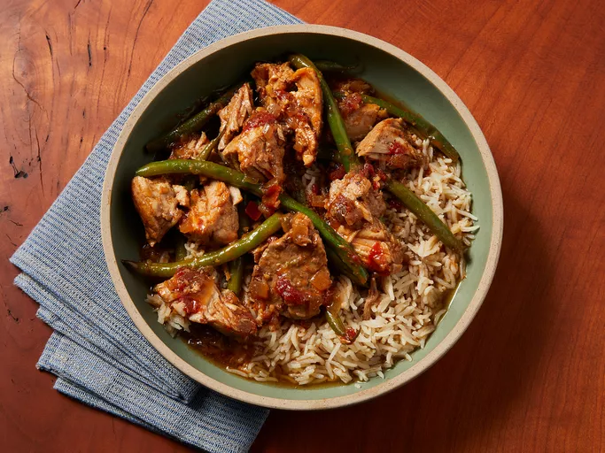

Sinigang
Home

What is Pork Sinigang
Pork Sinigang is a dish sour and tangy soup dish that is made from
pork ribs, tamirind, and various vegetables of your choice! You can
use green beans, bok choy, ginger, onion, tomatoes, etc.
Ingredients
- Pork Spare Ribs
- Tamirind/Sinigang Soup Packets
- Green Beans
- Bok Choy
- Garlic
- Ginger
- Tomatoes
- Onions
Steps
- Get a pot, add oil to the bottom, and sear the meat until brown
- Add ginger, onions, and garlic to the bot until fragrant
- Fill the pot with 5 cups of water, deglaze the bottom, and bring to a boil
- Add the Sinigang Soup Mix to the water and let boil
- Add Meat and Vegetables to pot and lit simmer for 30 minutes to an hour while skimming the top
for impurities
- Once meat is tender and cooked through serve and enjoy!